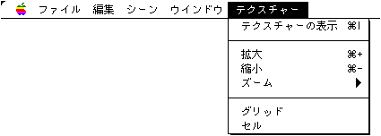
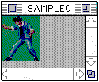
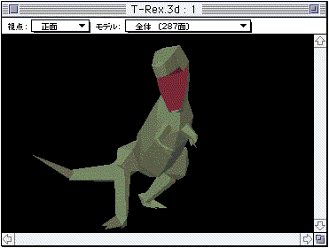
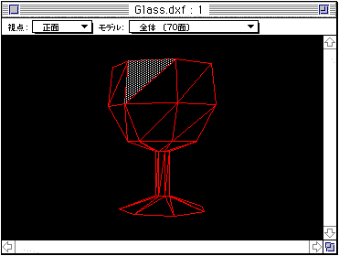
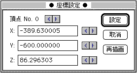
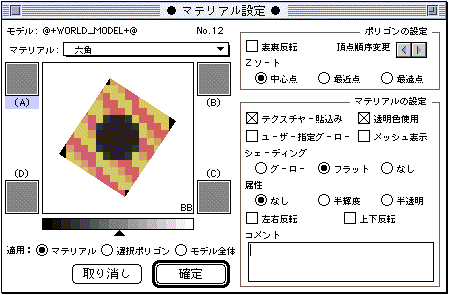
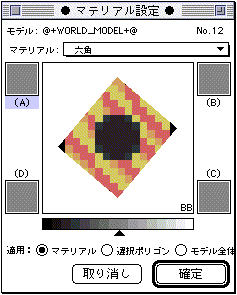
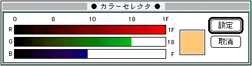

★Graphic Tools Guide
★3Dエディタユーザーズマニュアル
★Graphic Tools Guide
★3Dエディタユーザーズマニュアル
▲
戻る｜
進む▼
3Dエディタユーザーズマニュアル/2.使用方法
■テクスチャーメニュー

●テクスチャーの表示
- テクスチャ画像ファイル(PICT、DGT、RGB)を表示するテクスチャウインドウを開きます。

●拡大
- テクスチャウインドウの画像を拡大表示します。
●縮小
- テクスチャウインドウの画像を縮小表示します。
●ズーム
- 階層メニューにより指定のズームで表示します。
●グリッド
- ４倍以上の拡大表示時に、ドットごとにグリッドを表示します。
●セル
- セル（８ドット）ごとにグリッドを表示します。
●ツールパレット＆シーンウインドウ
- ３D立体画像は下記のようなシーンウインドウにて表示されます。

- 上下左右移動、前後左右移動、Ｙ軸回転、Ｘ軸回転、Ｚ軸回転、拡大／縮小、ポリゴン選択、３角形結合はツールパレットの各ツールを選択後、シーンウインドウ上でマウスのドラッグにより行います。
また、シーンウインドウには視線方向を指定するメニューとモデル単位で表示するためのメニューが付いています。
- ポリゴン選択ツールを使用時にshift＋クリックを行うと複数のポリゴンを選択することが可能です。
これによって複数選択されているポリゴンに対し、一括してマテリアル情報を付加することができます。
- ３角形結合ツールは下図のような近接する２つの３角形を結合するツールです。
まず、１つ目の３角形にマウスを移動し、マウスボタンを押し下げたまま近接するポリゴン上をドラッグすると、
結合可能な２つ目のポリゴン上にマウスが移動してきたときに、２つのポリゴンが同時に選択マークが表示されます。
ただし、同一平面上にない場合は結合できませんので、このようなポリゴンは選択できません。
Optionキーを押しながら上記の操作を行うと、同一平面上にないポリゴンを強制的に接続し、
四角形ポリゴンの特性を生かしたデータの節約をすることができます。
ただしこの場合、正確な立体としての情報は失われますので注意が必要です。

- また、選択されたポリゴンが三角形であった場合、optionキー＋Command（�）キーを同時に押すことによって重複頂点の表示を行います。
●座標設定ウインドウ
- シーンウインドウでctrlキー＋クリックによってポリゴンの選択を行うと、座標設定ウインドウが表示され、頂点データの変更((微調整)を行うことができます。

- 頂点はctrlキー＋クリックで指定されたポリゴンの最近点が選択されますが、座標設定ウインドウ上で同一ポリゴン上の頂点を任意に選択することができます。座標は、直接数値入力、あるいは環境設定の頂点の移動率に従って変更することができます。
変更された頂点座標データは、設定ボタン、あるいは別頂点を選択した時点で確定され、取消ボタンで設定を取り消します。変更操作中に一時的に状況を確認したい場合は、再描画ボタンをクリックします。
●マテリアル設定ウインドウ
- マテリアルの設定は下記のようなシーンウインドウにて行います。

- シーンウインドウでポリゴン選択ツールによって選択されたポリゴンが矩形内に表示され、このポリゴンの属するモデル名と、ポリゴン番号が表示されます。
- ウインドウのズームボックスにより、下記のようにウインドウを小さくできます。

- マテリアルは名称で管理されます。ポリゴンごとに設定されているマテリアルがマテリアルポップアップメニューに設定されています。
マテリアル内容の変更を行うとそのマテリアルを設定しているポリゴン全てに反映されます。各ポリゴンはマテリアルポップアップメニューによって、ファイル内に保存されているどのマテリアルにも切り替え可能です。また、マテリアルの新規追加、名称変更も、このポップアップメニューで設定できます。
- マテリアルの設定は確定ボタンをクリックすることにより初めてポリゴンに影響します。このとき『適用』で指定されている項目によってその影響範囲が変わります。
- ポリゴンの表示されている矩形内でマウスをクリックすると下記のカラーセレクタダイアログによって、ポリゴンのノンテクスチャカラーを設定できます。

- (A)、(B)、(C)、(D)で示された矩形内も同様なカラーセレクタダイアログによりポリゴンのグーローカラーを設定できます。
ただし、このカラーが使用されるのは『ユーザ指定グーローを使用』のチェックボックスがチェックされているときに限ります。
- グレーレベルで示されたレベルコントロールはグーローオフセットです。
『3D Editor』上では、先述のグーローカラーとここで設定されたオフセット値を基準としてポリゴンのカラー演算結果を出力しています。
- ※グーローオフセットの設定はセガサターンの機能としては存在しません。ここで設定された値を利用する場合は実機上においてのプログラムレベルで対応が必要となりますので注意してください。
- ポリゴン設定に含まれている各設定は各ポリゴン単位で設定される項目です。ここでセットされた内容はマテリアルの設定にかかわらず、ポリゴン単位で変更できます。
『頂点順序変更』では、ポリゴンの頂点の順序を変更できます。主にテクスチャデータが思い通りの方向に設定できない場合に有効となる機能です。
マテリアルの設定の『透明色使用』チェックボックスに×マークを入れると、テクスチャデータの黒色($0000)の部分を透明表示します。
▲
戻る｜
進む▼
★Graphic Tools Guide
★3Dエディタユーザーズマニュアル
Copyright SEGA ENTERPRISES, LTD., 1997